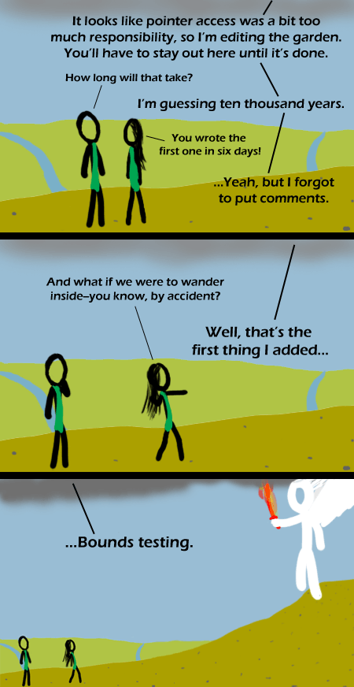

Comic JK 321
When I Feel Like It
⇤
<
?
>
⇥

⇤
<
?
>
⇥
Forum
.
RSS
.
Digg
.
Facebook
.
Reddit
.
Twitter
.
Stumbleupon
Enter your thoughts on number 321 here. Please, no spamming, trolling, phreaking, breaking into the garden, or rainbowdash idiocy. I am loving this series XD more than the one with the shotgun+rabbit/guy/winjas/mr gates >shotgun win-gates beats this. still, pretty good. plot is better than puns. >I probably prefer the puns lol >>both are even better. This is a very good series. I love puns -Csana this is a pretty old and well developed plot line. you may have even heard of it. >ya but you can't trust the source with the holes in its theory. >>What holes? What theory? It was meant to be more a historical account than a theory... Theroies are "this is what should happen" rather than "this is what happened" and thw two are (surpisingly) incompatible (what should happen and what did happen, that is) >>>Theory means something that is well enough defined and likely enough that it can be considered true, but there is still some extremely thin chance that it is false. You're right, the Christian myth isn't theory. It is a hypothesis, if even that. Which is aside from the fact that it is a mistranslation of an intentionally misrecorded oral tradition that likely changed much before it was even recording, and which was itself a perversion of the Jewish religion based on the worship of a man instead of God; In other words, Christianity is a cult of a cult of a cult. Insert "Yo dawg" Xhibit joke here. based on the best selling sci-fi book ever >I thought it was fantasy, not sci-fi. I mean, seriously, a giant war between angels and creatures of the underworld? >>When you find the giant war between angels and creatures of the underworld in it, tell me, I want to read that chapter. Revelation 19:17-21, 20:17-20 >>>I always wondered when someone on this forum would quote chapter and verse >>>>The guy could also be referring to the bible(science fiction for cavemen) ;P -Csana